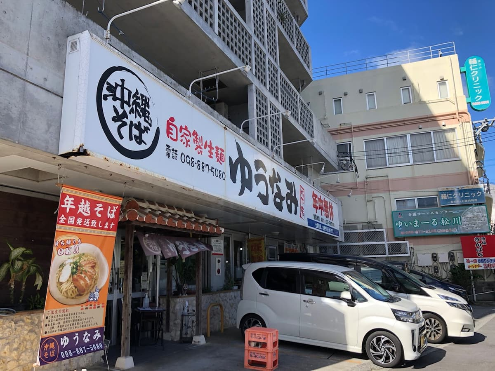
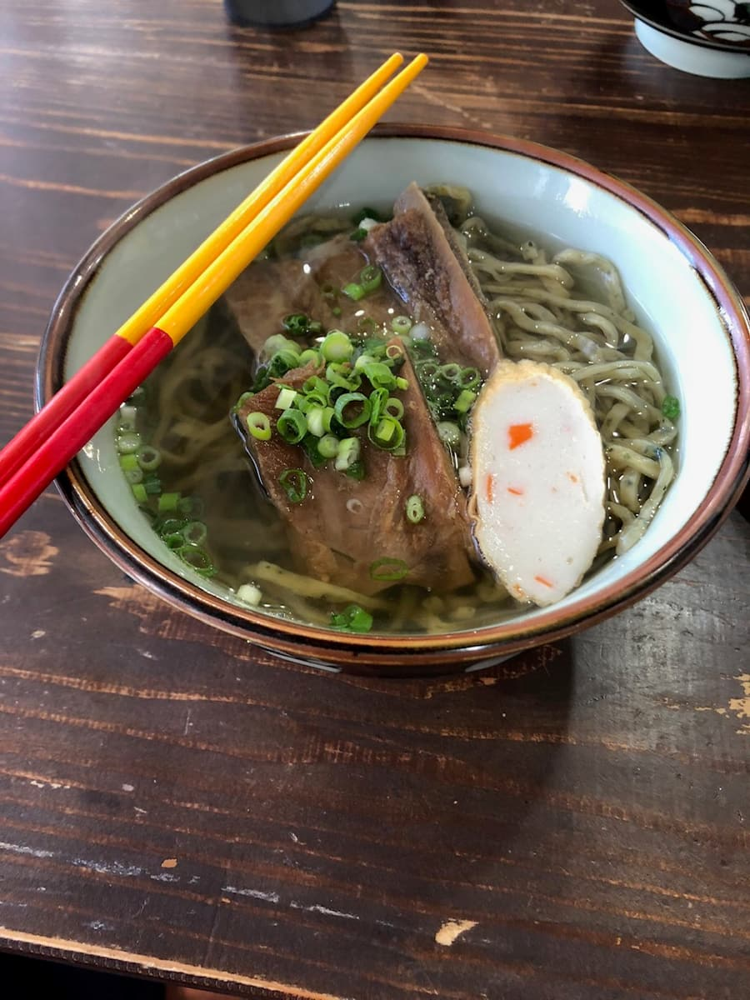
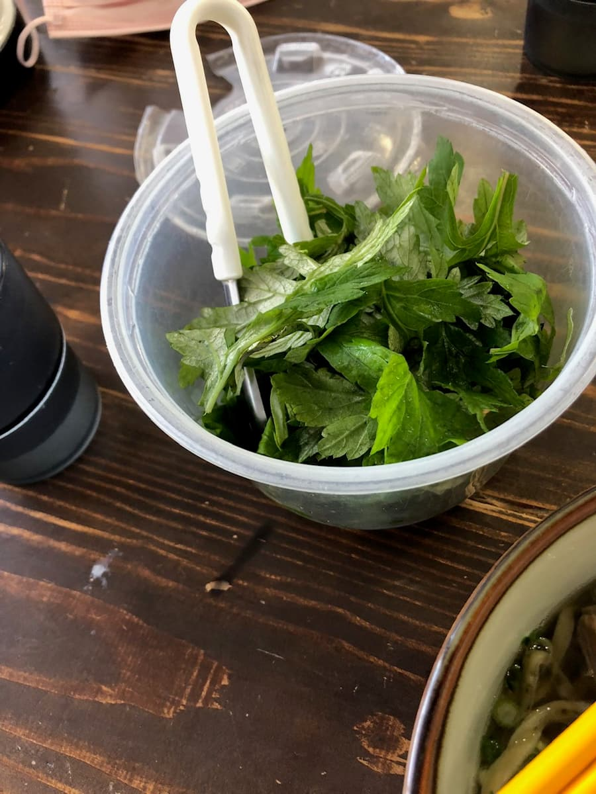

2022年12月吃的☺ 被招牌上的「自家制生面」吸引了😁

点了排骨面（ソーキそば）。


柴鱼高汤味道很足的汤头好好喝😋 面可以从宽面、细面、艾草面中选择，这次选了艾草面。自家制生面很有嚼劲，还有艾草的香气，面也很好吃。 只是很可惜，排骨吃起来干干柴柴的，味道也很淡，淡到让我觉得「是还没调味吗？」，感觉是没什么味道的排骨。
评分（9.5分/15分）：哎呀～面和汤头都相当好吃，跟其他店比起来也算上位等级，没想到配料（排骨）竟然没味道又干柴，真的很可惜。如果排骨也好吃的话，我觉得会是「不输推荐店家」的等级吧～。
面：★★★✬☆（3.5）
汤头：★★★✬☆（3.5）
配料：★★✬☆☆（2.5）